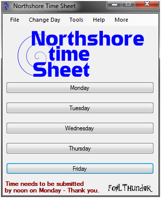
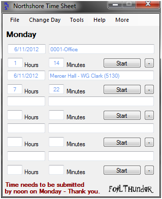
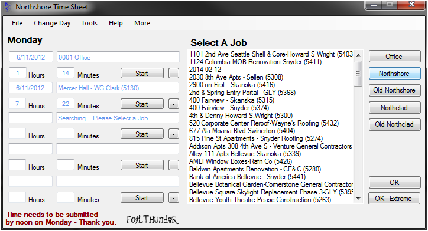

Description
Northshore Time Sheet is a powerful solution to time recording and management.
VB.net is used to search the Northshore's server and provide the user with all jobs available. The user then sets a job to the current and starts the timer to record job time.
At the end of the week, the user has the option to electronically submit their time to accounting. Northshore Time sheet proved to save employee time related to time sheets both for users and the accounting department. Northshore Time Sheet saves on paper by eliminating the need to print timesheets each week.
Images


